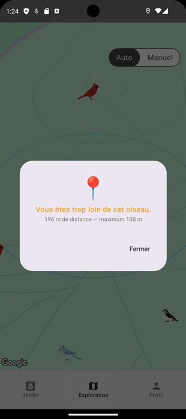

Application Android
Kotlin, Jetpack Compose et architecture MVVM pour l’interface et la logique côté mobile.
Projet universitaire · Application Android
Et si une promenade devenait une quête d’observation ? BirdQuest GO transforme la découverte des oiseaux en jeu mobile géolocalisé : on explore son environnement, on repère des oiseaux virtuels, puis on les ajoute à sa collection en réussissant un mini-jeu.
Le concept
Le mode Exploration s’appuie sur la localisation du téléphone et une carte interactive pour faire apparaître des oiseaux à proximité. Le joueur peut sélectionner un oiseau atteignable et lancer une séquence de jeu pour tenter de le taguer.
Une fois découvert, l’oiseau rejoint la collection. Sa fiche rassemble des informations comme son espèce et sa localisation, tandis que l’encyclopédie permet d’en apprendre davantage sur les espèces rencontrées.

La boucle de jeu
La rencontre ne se limite pas à toucher un marqueur sur la carte. Le joueur observe une séquence, puis doit la mémoriser et la répéter afin de s’approcher de l’oiseau et de le taguer avant qu’il ne s’envole. La proximité est importante : le SRS définit une portée d’interaction maximale de 100 mètres.
Si l’oiseau est trop loin, l’application empêche l’interaction. Cette contrainte relie directement la progression du mini-jeu à l’exploration du monde réel.

Un autre rythme
Le mode Jardin offre une autre façon de profiter de l’application, sans devoir explorer les alentours. Le joueur peut aménager son espace avec des objets de personnalisation et y accueillir des oiseaux.

Apprendre en jouant
Chaque rencontre nourrit la collection et encourage à découvrir les espèces. Les fiches de l’encyclopédie présentent notamment leur nom, leur région et des informations naturalistes, pour prolonger la découverte au-delà du jeu.

Architecture documentée
La pile technique ci-dessous est celle décrite dans le SRS du projet.
Kotlin, Jetpack Compose et architecture MVVM pour l’interface et la logique côté mobile.
NestJS et TypeScript côté serveur, avec Firebase Authentication et Firestore.
Google Maps, Google Street View, Room et DataStore font partie des outils décrits.